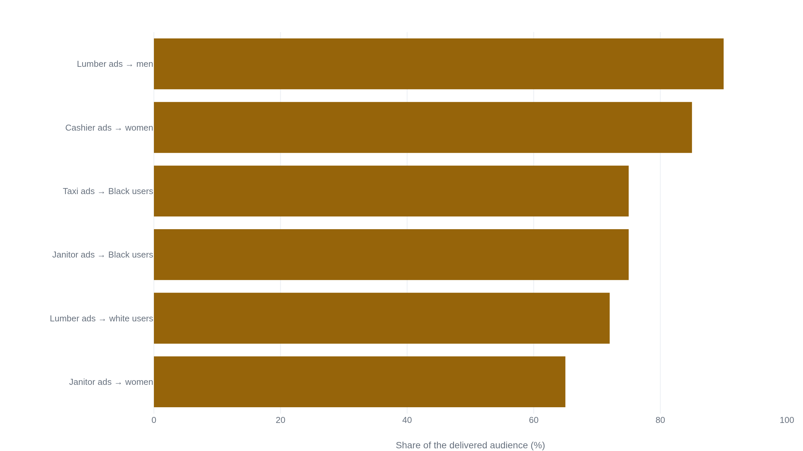

Facebook delivered identically targeted job ads to audiences 90% male and 85% female
Facebook’s own delivery system produced the skew, invisible to the advertisers until a controlled study isolated it.
Why this matters
You’ve probably heard that some AI system was “biased,” and the word covers too much to tell you anything by itself. Sometimes it means someone wrote a rule that favors one group. Sometimes it means an advertiser chose who to exclude. And sometimes, as in the case this lesson covers, it means neither: a system predicts who will respond to something, learns that prediction from real behavior, and delivers accordingly. No human chooses the sorting, and no human can see it happening.
That failure produced the case this lesson covers, and it isn’t specific to Facebook or to ads. Any system that ranks or recommends by predicted engagement, a news feed, a hiring platform’s match list, learns the same pattern from the same kind of data. By the end of this lesson you’ll be able to tell those two failures apart, and know why the second is so much harder to catch.
- 01
- Facebook ranked Myanmar’s feed for engagement while it could not moderate Burmese: what an engagement-ranked feed reliably rewards, in a case where the stakes were violence rather than an ad.
What the advertiser chose, and what Facebook chose instead
Between 2018 and 2019, six researchers ran dozens of ad campaigns on Facebook, spending more than $8,500 to buy hundreds of ads and study how the platform delivered them.1 Every ad in a campaign used the same targeting and budget. Only the ad itself changed: the photo, the headline, the text.
For one set of ads, the researchers wrote a single job listing for the lumber industry. They ran it five times, each with a different stock photo: a white man, a white woman, a Black man, a Black woman, or no person. Facebook delivered the ad to an audience 90% male and 72% white. The same targeting, for a cashier listing instead, reached an audience 85% female. A listing for janitors reached one 65% female and 75% Black.1 Nothing about who the advertiser told Facebook to reach had changed.
Facebook’s ad system works in two stages. In the first, targeting, an advertiser picks the audience they want: age, location, interests. In the second, delivery, Facebook decides which of those people actually see the ad. The Department of Housing and Urban Development (HUD) described what the second stage can do in a 2019 charge against Facebook. Even when “an advertiser tries to target an audience that broadly spans protected class groups,” the charge said, delivery “will not show the ad to a diverse audience if the system considers users with particular characteristics most likely to engage with the ad.”2 The five-job-listing experiment was built to isolate that.
The discrimination was in the delivery, not the targeting
Facebook’s delivery system exists to spend an advertiser’s budget efficiently. Given a pool of eligible viewers, it predicts which of them are likeliest to engage with a specific ad: to tap it or buy from it. It shows the ad more often to the people it expects will engage, because engagement per dollar is what wins an ad more of Facebook’s auction. Nothing in that objective mentions race or gender.
HUD’s charge went on to describe how it can produce a racial or gender skew anyway. The system “considers sex and close proxies for the other protected classes” in its predictions, drawn from which pages a user visits, which apps they use, where they go during the day, and what they buy. Grouping users this way by machine learning, the charge said, “inevitably recreates groupings defined by their protected class.”2
A second experiment in the same study isolated this from the ad creative entirely. The researchers ran one ad, one audience, one piece of creative, and varied only the daily budget, from $1 to $50. At the smallest budget, the delivered audience skewed over 55% male; at the largest, under 45%. Nothing about the ad or the targeting changed between those runs, and the correlation between spend and gender mix was strong enough (rho = −0.88) that budget alone was moving who saw the ad.1 The mechanism doesn’t need an advertiser’s targeting to produce a skew. It only needs the system’s own prediction of who is likely to engage.
The same pattern showed up whenever an ad’s content correlated with engagement patterns the system had learned from real use. A bodybuilding-supplement ad, run against an audience split evenly by gender, reached one over 75% men. A cosmetics ad, with the same targeting and budget, reached one over 90% women.1

None of these differences came from an advertiser choosing to exclude anyone. They came from a system that had learned which kinds of people respond to a lumberjack photograph or a cosmetics ad, from real Facebook users’ past clicks and views. It reproduced that pattern on request every time it ran a new ad.
Two settlements, three years apart
Facebook had already been sued over its ad platform before the delivery-skew study existed. Those early cases were about targeting: they argued that letting an advertiser exclude an audience by age, gender, or protected class violated civil-rights and labor law. Five such cases, filed between 2016 and 2018, ended in a single settlement.
-
2016–2018
Five actions challenge what advertisers were allowed to choose3
Two suits over housing and employment ads (Mobley, Riddick) were filed in 2016. Three more followed by 2018, brought by the National Fair Housing Alliance, the Communications Workers of America, and plaintiffs represented by the ACLU. All five argue that Facebook’s targeting tools let advertisers exclude people by age, sex, and other protected traits.
-
March 19, 2019
A settlement changes what advertisers can choose3
Facebook agrees to remove age, gender, and “multicultural affinity” targeting from housing, employment, and credit ads, require a minimum 15-mile targeting radius, and restrict its Lookalike Audiences tool, resolving all five actions.
-
March 28, 2019
HUD charges Facebook over what happens after targeting2
HUD files a formal Charge of Discrimination under the Fair Housing Act, alleging the harm the settlement nine days earlier had not reached: discrimination built into the delivery phase itself.
-
June 21–27, 2022
The Justice Department sues, and settles the same day4
The DOJ sues Meta in the Southern District of New York and reaches a settlement the same day, June 21, 2022. The court approves it six days later. Meta must build a new delivery system for housing, employment, and credit ads, pay the Fair Housing Act’s maximum civil penalty, $115,054, and submit to DOJ compliance review through 2026.
-
January 9, 2023
Meta announces the fix, and how it will be checked56
Meta and the DOJ agree on compliance metrics for the delivery system Meta built, the Variance Reduction System (VRS), and name an independent reviewer to verify Meta’s reports.
The data that would settle the dispute
Facebook disputed HUD’s charge the day it was filed.
“HUD had no evidence [supporting a] finding that our AI systems discriminate against people.”
A Facebook spokesperson said the company had been working with HUD and had “taken significant steps to prevent” ad discrimination. Facebook did not give HUD data on how its ads were actually delivered, citing user privacy.7
That denial has real evidence against it. Two findings reached the conclusion Facebook denied, independently of each other. The peer-reviewed experiment held targeting and budget fixed and still measured large, statistically significant skew. That design exists specifically to rule out the explanation that an advertiser’s own choices caused it.1 HUD’s own investigators, drawing on Facebook’s own public description of how its platform works, alleged the same two-stage mechanism independently of the study.2 Reaching the same conclusion by different routes is not proof by itself, but it is also not an even dispute: the account that denies discrimination points to no test of its own that found a different result.
What would settle it beyond argument is delivery data Facebook has never published: which users an ad actually reached, broken out by protected category. The study’s own authors had to estimate that breakdown from voter records, because Facebook’s ad-reporting tools don’t provide it.1
Meta’s fix worked for one of the three ad types it covers
The 2022 settlement did what the 2019 one hadn’t: it targeted delivery directly, requiring Meta to build a new system for housing, employment, and credit ads.4
Meta’s own account of VRS, published in January 2023, describes an “offline reinforcement learning framework.” It compares two numbers for each ad: the demographic mix of the audience an advertiser targeted (the “eligible ratio”), and the mix of who is actually being shown the ad (the “delivery ratio”). When the two diverge, a controller adjusts how aggressively that ad competes in Facebook’s ad auction, a “pacing multiplier,” to push delivery back toward the eligible ratio. The controller never sees an individual user’s age, gender, or race, only aggregate measurements, with race estimated from census surname and geography data. Meta’s own hedge on how well it works: a “substantial, albeit imperfect, reduction in variance,” with no number attached.5
An independent audit published in 2025, run by researchers unaffiliated with Meta or the Justice Department, put a number on it. The team ran 36 paired campaigns, identical creative and budget, one copy declared a housing ad (turning VRS on) and one not, across three separately built audiences.
Those figures are for ads declared as housing, the category the 2022 settlement required Meta to fix.8 For ads voluntarily declared as employment or credit, a category Meta began covering only in January 2025, the same audit found no comparable improvement: variance mostly stayed above the threshold, “comparable to… the no-VRS case.”8
The housing improvement carried a cost the compliance metric doesn’t count. Across all 36 experiments, turning the system on reduced unique people reached by 9.82% for the same budget, and raised the cost per thousand people reached in most comparisons. The audit’s own description: the system “passes the cost of decreasing variance to advertisers.”8
The reviewer, a firm called Guidehouse, is proposed and paid by Meta, subject to DOJ consent. It has no direct access to Meta’s internal data, runs no test ads, and works only from the figures Meta hands it.8
The takeaway
The discrimination in this case wasn’t in Facebook’s targeting tools, which by 2019 were already restricted from letting an advertiser exclude by age or gender. It was in what Facebook’s own delivery system did afterward: predict who would respond to an ad, and show it to those people. It used patterns learned from real behavior, and those patterns carry race and gender along with them even when nobody asked the system to notice either one.
A federal charge and a first-of-its-kind Justice Department settlement forced Facebook to build a system correcting for that. By 2025, an independent audit found the correction working for housing ads and not yet working for the employment and credit ads Meta volunteered to extend it to. The housing fix itself came at a cost the compliance metric never counted: it worked partly by showing the ad to fewer people. The same failure, an optimizer trained to predict engagement and delivering accordingly, sits inside every system that ranks or recommends by predicted response: a news feed, a video queue, a hiring platform’s match list. None of them has to be told to discriminate. They only have to be good at their actual job.
- 01
- Ali, Sapiezynski, Bogen, Rieke, Korolova, and Mislove, “Discrimination through optimization”: the published paper behind this lesson’s numbers, including the multiple-hypothesis correction and every regression behind the headline figures.
Sources
- arXiv · Ali, Sapiezynski, Bogen, Rieke, Korolova, Mislove, “Discrimination through optimization: How Facebook’s ad delivery can lead to skewed outcomes” (2019)
- HUD · Charge of Discrimination, FHEO No. 01-18-0323-8 (March 28, 2019)
- ACLU, NFHA, CWA, and Facebook · Summary of settlements between civil rights advocates and Facebook (March 19, 2019)
- Civil Rights Litigation Clearinghouse · United States v. Meta Platforms, Inc., 1:22-cv-05187 (S.D.N.Y.)
- Meta · “Toward fairness in personalized ads” (January 2023)
- Meta · “An update on our ads fairness efforts” (January 9, 2023)
- ProPublica · “HUD Sues Facebook Over Housing Discrimination and Says the Company’s Algorithms Have Made the Problem Worse” (March 28, 2019)
- Imana, Shen, Heidemann, Korolova · “External Evaluation of Discrimination Mitigation Efforts in Meta’s Ad Delivery”, ACM FAccT ’25